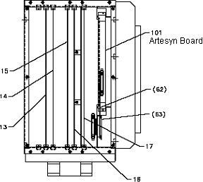

Operating Documentation
Direction 2378260-800, Rev# 10
Operating Documentation |
| POTENTIAL FOR SHOCK | |
| VOLTAGE MAY BE PRESENT. | |
| Use proper lockout/tagout procedures before performing Upgrades in the gantry. See safety menu of Service Document gui for appropriate procedures. |

Move table to lowest elevation.
Remove gantry side covers.
Turn OFF all three (3) switches on status control box, on right side of the gantry.
Open Gantry Left Side Cover.
Loosen two (2) screws that fasten the front cover to the STC.
Remove assembly cover.
Loosen the two wingnuts on the STC Chassis, and rotate the STC Chassis 90 degrees. Then lock it into position.
| Prevent permanent damage to the static-sensitive boards. Attach the anti-static wrist strap to your wrist and to a bare metal grounding point on the gantry before you continue. | |
Attach wrist grounding strap, remove, and set aside, Scom Circuit Board on ground mat.
Unplug the coaxial cable.
Unscrew the top and bottom fasteners, then remove the Artesyn board.
Carefully install new STC Artesyn Board into card rack assembly.
Reassemble Gantry STC covers. Use push-to-release tab to rotate card cage back into position.

| NOTE: | Gantry covers were removed and LOTO performed in previous section. |
To access the OBC chassis, loosen the 8 captive screws, and remove the OBC Front Cover.
Unplug serial and ethernet cables from the OBC Artesyn Board.
Loosen Artesyn Board top and bottom fasteners with a Phillips #2 screwdriver.
| Prevent permanent damage to the static-sensitive boards. Attach the anti-static wrist strap to your wrist and to a bare metal grounding point on the gantry before you continue. | |
Pull Artesyn board out using black plastic tabs located on top and bottom of the board.
Place the board in an Anti-Static bag.
Carefully install new OBC Artesyn Board into card rack assembly.
Install OBC Cover. Torque to 2 N-m (17.7 in-lbs).